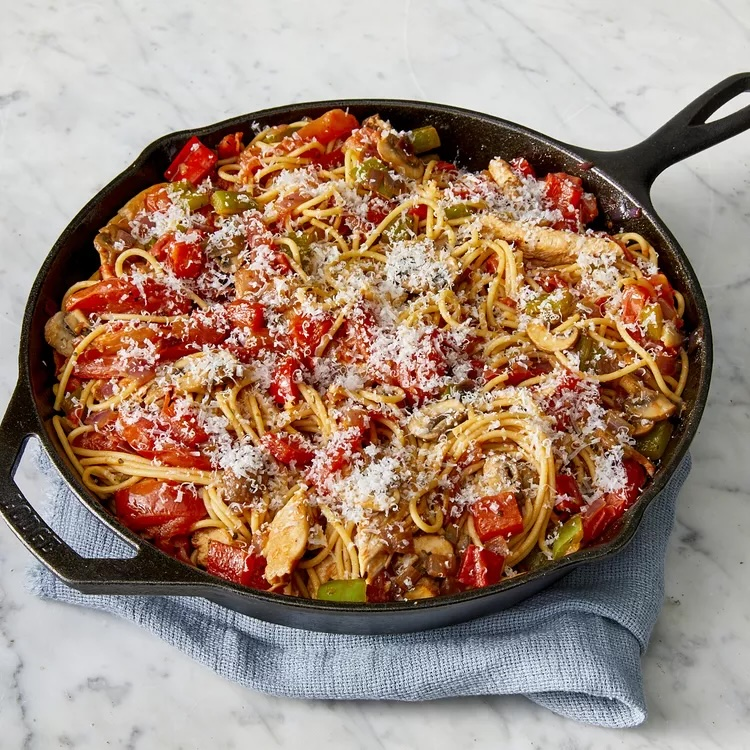

Pizza Dough

Description
This recipe, adapted from Roberta’s, the pizza and hipster haute-cuisine utopia in Bushwick, Brooklyn, provides a delicate, extraordinarily flavorful dough that will last in the refrigerator for up to a week. It rewards close attention to weight rather than volume in the matter of the ingredients, and asks for a mixture of finely ground Italian pizza flour (designated “00” on the bags and available in some supermarkets, many specialty groceries and always online) and regular all-purpose flour. As ever with breads, rise time will depend on the temperature and humidity of your kitchen and refrigerator.
Ingredients
- 153 grams 00 flour (1 cup plus 1 tablespoon)
- 153 grams all-purpose flour (1 cup plus 1 tablespoon and 2 teaspoons)
- 8 roma (plum) tomatoes, halved and sliced
- 1 teaspoon garlic powder
- ½ teaspoon dried oregano
- 2 teaspoons dried basil
- 1 pinch salt
- 1 teaspoon ground black pepper
- 1 ½ teaspoons white sugar
- 1 tablespoon ketchup
- 2 skinless, boneless chicken breasts, cut into thin strips
- 2 garlic cloves, crushed
- 1 green bell pepper, chopped
- 1 red bell pepper, chopped
- 1 red onion, chopped
- 1 cup sliced fresh mushrooms
- ¼ cup grated Parmesan cheese
Steps
- Bring a large pot of water to a boil over high heat. Stir in spaghettini and return to a boil. Cook pasta until it has cooked through, but is still firm to the bite, 6 to 8 minutes. Drain well and keep warm.
- Heat 2 tablespoons oil in a large skillet over medium heat. Stir in tomatoes; cook until they soften and begin to break down. Stir in garlic powder, oregano, basil, salt, pepper, sugar, and ketchup. Heat sauce through and reserve.
- Heat remaining 3 tablespoons oil in a separate cast iron skillet over medium heat. Stir in chicken; cook until browned. Stir in garlic cloves; cook for 1 additional minute.
- Remove chicken from skillet and reserve. Turn heat to high. Stir bell peppers, onion, and mushrooms into the skillet and cook until they begin to soften. Stir in browned chicken. Turn heat to medium and cook until chicken is no longer pink in the center and vegetables are cooked through, about 5 minutes.
- Toss chicken and vegetables with tomato sauce and hot pasta. Serve sprinkled with Parmesan cheese.